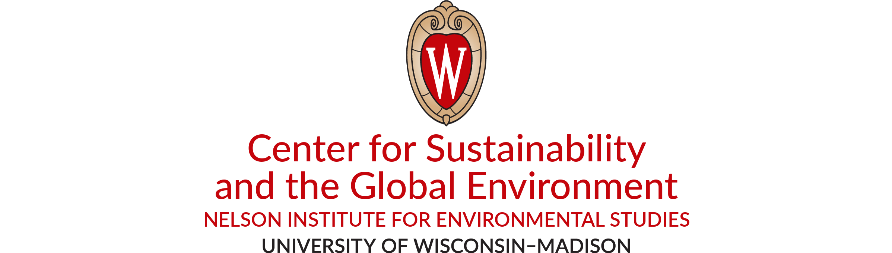
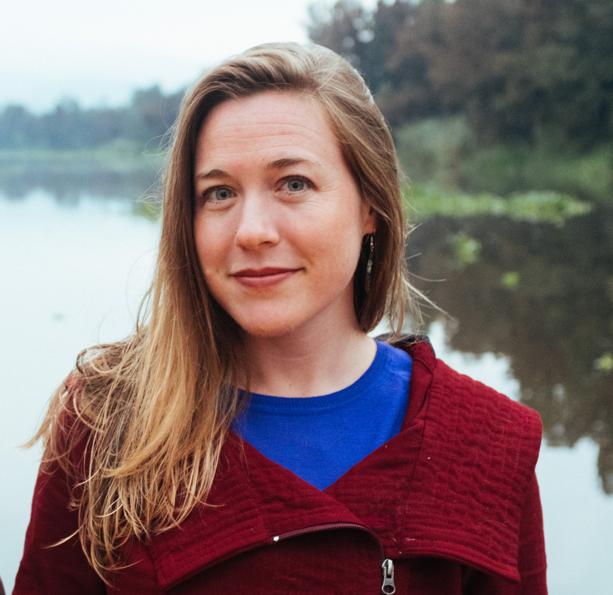
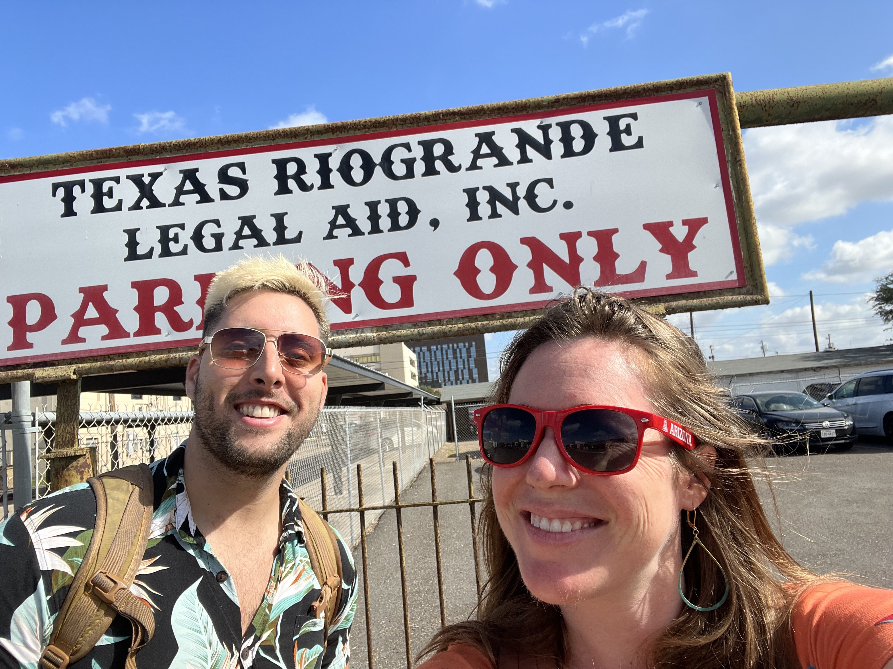
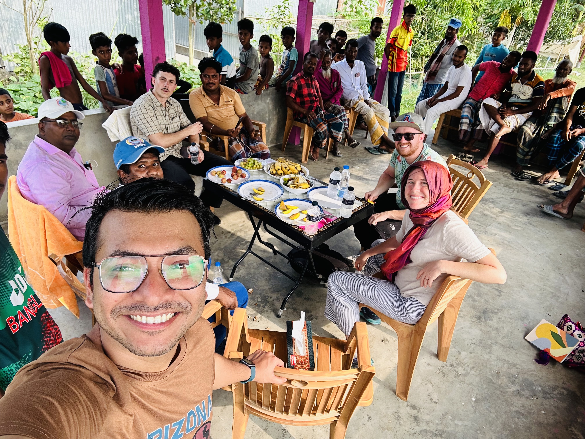
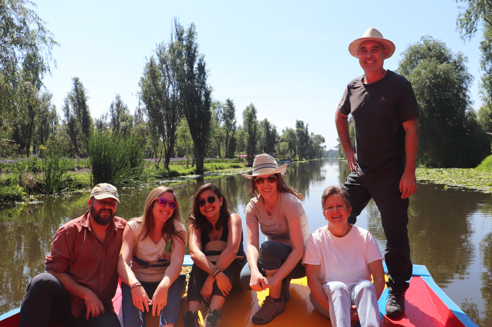
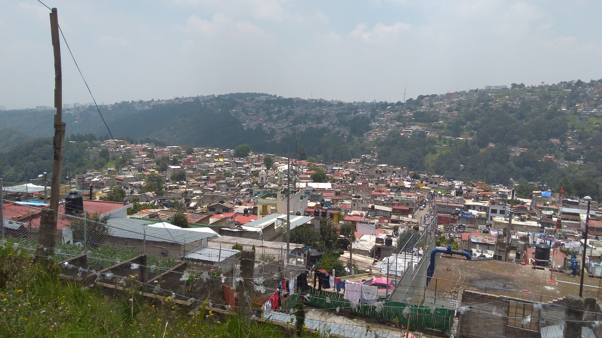
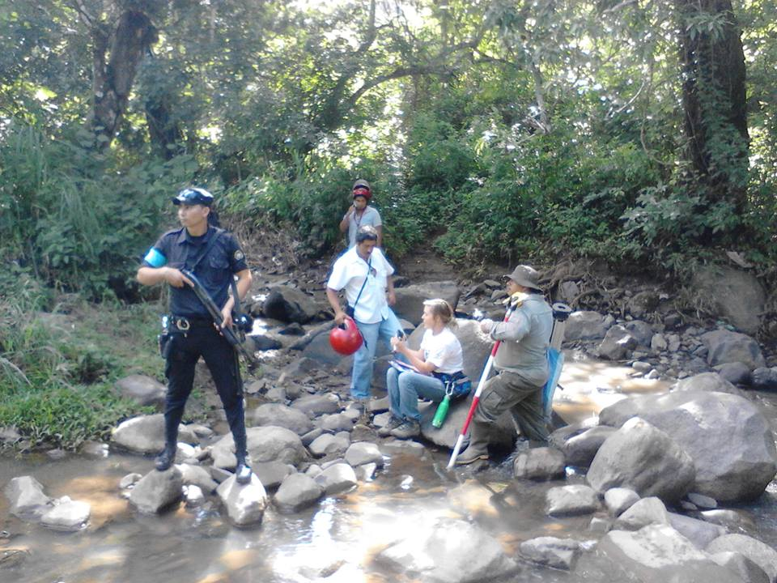
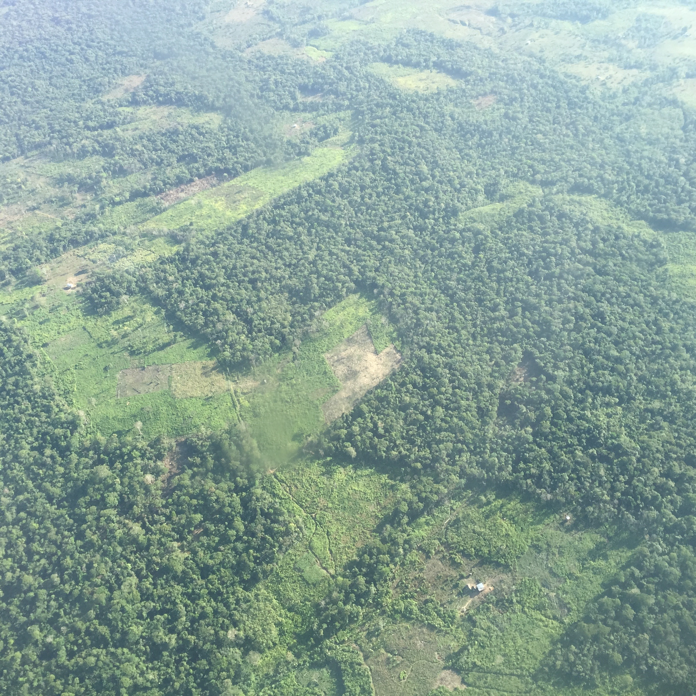

Beth Tellman · Assistant Professor
Geography, Remote Sensing & Human-Environment Systems
I direct the Social[Pixel] Lab, which uses deep learning, satellite imagery, and social science to study the causes and consequences of global environmental change. My research advances three areas: flood exposure and adaptation, machine learning for Earth observation, and land system science. We partner with communities, NGOs, insurers, and policymakers to translate data into real-world impact.


Research Areas
Combining satellite imagery, hydrologic modeling, and social science to understand where floods occur, who is exposed, and how communities and markets can adapt. This includes near-real-time flood monitoring, parametric insurance design, and building the empirical record of global inundation events needed to close the flood protection gap.
Leading development of deep learning architectures and benchmark datasets for satellite-based flood detection. Sen1Floods11 is now widely used for flood detection benchmarking. Ongoing NASA collaboration is building the world's first daily AI-based global flood mapping system at 375-m resolution using VIIRS imagery — with PhD student Alex Saunders leading the algorithm development — achieving an estimated 141% accuracy improvement over the current operational system.
Applying spatial data science and institutional analysis to uncover societal drivers of urbanization and deforestation—from narcotrafficking and forest loss in Central America to electoral politics shaping informal urban expansion in Mexico City (PNAS, 2026). Research on rainwater harvesting, conducted with NGO Isla Urbana, contributed to city-wide policy implemented by Mexico's President Claudia Sheinbaum.
Research Highlights & Impact
A widely-used open database of satellite-derived flood maps (913 curated events, 250-m resolution), cited in the IPCC AR6 report and covered by CNN, BBC, and Washington Post. Revealed that flood-exposed populations are growing 8–10× faster than models assumed. A new NSF EAGER award will expand coverage to 10,000+ events at 30-m resolution.
Co-founded FLUJOS (Flood Justice Utilizing Satellite Observation) with organizations in the Rio Grande Valley, Texas, integrating lived experience and satellite data to build flood resilience in colonia communities facing repeated disaster and environmental injustice.
Co-founder and Chief Science Officer of Floodbase, featured as a Bloomberg New Economy Catalyst. Satellite-based parametric methods now cover California municipalities against atmospheric river flooding, CEI’s nationwide property portfolio in Italy, and Colombian farming communities — addressing the >80% global flood protection gap.
Research conducted with NGO Isla Urbana recommending 100,000 rooftop rainwater systems was presented to then-mayoral candidate Claudia Sheinbaum. After winning election, she implemented the program—now scaled city-wide. Co-founded Umbela, an NGO advancing Global South-led transformation.
Lab News
Fieldwork
Rio Grande Valley TX · Bangladesh · El Salvador · Mexico City · Nicaragua · Guatemala





